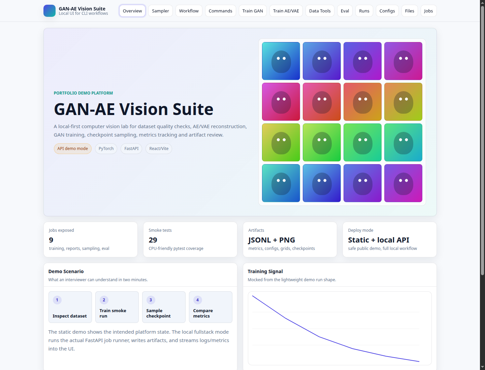
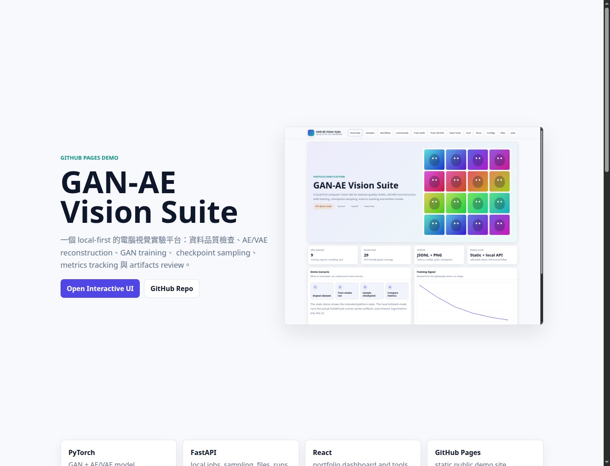
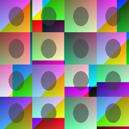

GitHub Pages Demo
GAN-AE Vision Suite
一個 local-first 的電腦視覺實驗平台：資料品質檢查、AE/VAE reconstruction、GAN training、
checkpoint sampling、metrics tracking 與 artifacts review。

PyTorchGAN + AE/VAE model workflows
FastAPIlocal jobs, sampling, files, runs
Reactportfolio dashboard and tools
GitHub Pagesstatic public demo site
Demo Video
短影片展示公開 demo 的主要畫面；完整訓練流程可在本機 fullstack 模式錄製。
Screenshots
面試官可以直接從這些畫面理解平台功能與完成度。
Overview dashboard: project value, mock metrics, sample grid and architecture.

Portfolio landing: concise public-facing project explanation.

Safe demo artifact: deterministic sample grid for screenshots.
What to Notice
- Config-driven ML workflows instead of hardcoded experiment scripts.
- Local job runner with streamed logs and metrics for demo operations.
- Checkpoint compatibility across PyTorch 2.6+ load behavior.
- Static public demo plus protected/local backend for safer deployment.
Run Locally
python -m pip install -r requirements.txt
cd gan-ui && npm ci
cd ..
scripts/dev_fullstack.sh